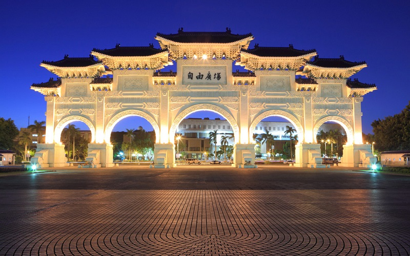

Chiang Kai-shek Memorial Hall
Taipei City
Liberty Square Center
The National Chiang Kai-shek Memorial Hall s a national monument, landmark and tourist attraction erected
in memory of Chiang Kai-shek former President of the Republic of China. It is located in Zhongzheng District.
The architecture uses white marble as material and is inspired by Tiantan in Beijing. The roof is blue and octagonal,
a shape that picks up the symbolism of the number eight, a number traditionally associated in Asia with abundance and
good fortune. At the west end stands the Liberty Square Center. It has served as the public gathering place since
its completion in the late 1970s. The name of the square recalls the important historical role of transition from one-party rule
to modern democracy in the 1990s. The ceiling of the hall is a caisson with the national emblem of Taiwan in the center.
The Caisson is a East Asian-style structure typically found in the ceiling of temples and palaces with shapes of include
square, octagon, hexagon, circle, and a combination of these.
- Official website: https://www.cksmh.gov.tw/eng/index.php
- Best seasons: all year around
- Transportation:
MRT Chiang Kai-Shek Memorial Hall Station, Exit 3、5&6.